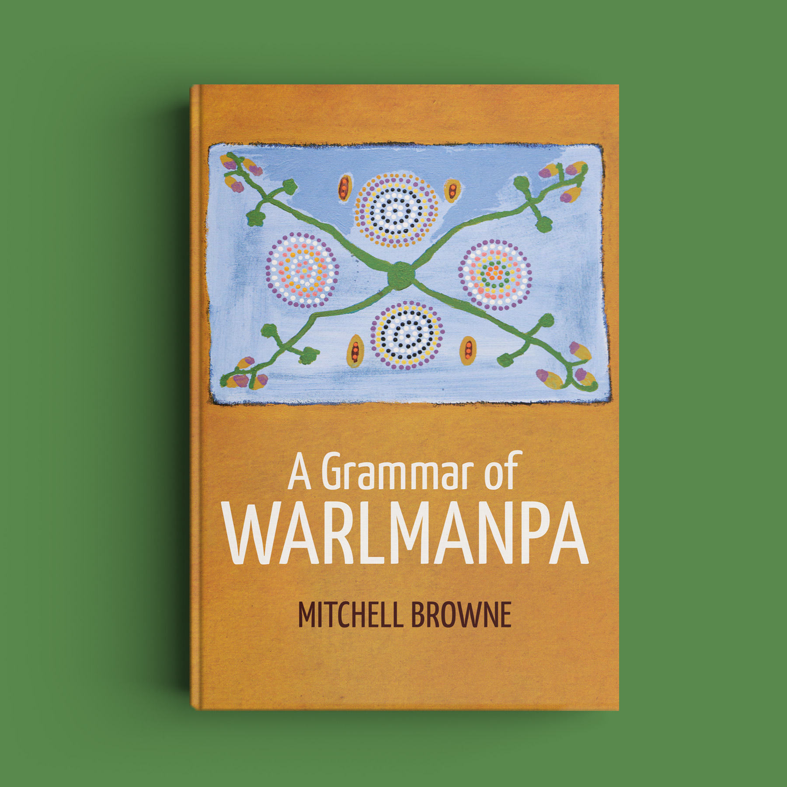

|
Browne, M., Harvey, M., Proctor, M & Mailhammer, R. (2026). Central vowels in Kamu and Larrakia, Australian Journal of Linguistics, DOI: 10.1080/07268602.2025.2593913. The vowel inventories of Kamu and Larrakia each consist of peripheral /i/-/u/-/e/-/a/-/o/ and another non-low vowel that has not been phonetically characterized. Descriptions of similar six-vowel systems in Western Top End languages offer inconsistent accounts of the non-peripheral vowel, but no instrumental analysis has yet been conducted. Acoustic and phonological analysis reveals that the sixth vowel is best characterized as /ʉ/ in Kamu and /ɨ/ in Larrakia. Height and backness are the critical phonetic properties that differentiate the non-peripheral vowel from the other vowel phonemes in each language. These results enhance our understanding of the structure and properties of higher cardinality vowel systems in Australian languages, and the typology of six-vowel systems more generally. |
Journal Article BBL |
|
Browne, M. (2024). A grammar of Warlmanpa. ANU Press. https://doi.org/10.22459/GW.2024

As spoken by Bunny Naburula, Danny Cooper, Dick Foster, Donald Graham, Doris Kelly, Elizabeth Johnson, George Brown, Gladys Brown, Jack Walker, Jessie Cooper, Jimmy Newcastle, Julie Kelly, Lofty Japaljarri, Louie Martin, May Foster, Norah Graham, Penny Kelly, Penny Williams, Selina Grant, Susannah Nelson, Topsy Walker, Toprail Japaljarri and William Graham. This volume is a descriptive analysis of Warlmanpa, a highly endangered language traditionally spoken northwest of the town of Tennant Creek, where most of the remaining speakers now live. This grammatical description is based on language work carried out by community members and linguists since 1952, and is the first published reference grammar of the language. The major areas of analysis include phonetics, phonology, morphology, and syntax. This volume also provides description of typologically notable features, including: a two-way stop contrast at each place of articulation; a complex second-position auxiliary system containing participant and tense/mood/aspect information; associated motion; and a lack of evidence for noun phrases. This volume lays the foundation for future Warlmanpa language work. |
Book Monograph WRL |
| Browne, M., Proctor, M., Simpson, J., Harvey, M., Mailhammer, R., & Carpenter, H. (2024). Stop Oppositions in Warumungu: A Distributional and Acoustic Analysis. In Proceedings of the Nineteenth Australasian International Conference on Speech Science and Technology, edited by Olga Maxwell and Rikke Bundgaard-Nielsen, 117–21. Melbourne: University of Melbourne, 2024 https://assta.org/wp-content/uploads/2024/11/Proceedings-of-the-of-19th-Australasian-International-Conference-on-Speech-Science-and-Technology-1.pdf Warumungu is a language of Central Australia with a reported contrast for stops. There has been no formal distributional or acoustic analysis of this contrast; this study addresses this gap. Analysis of 439 stops produced by three speakers reveals that the consistent phonetic correlates of the manner contrast are duration and voicing. The primary distinction in stop manner is duration; voicing distinctions are predictable from duration. |
Proceeding BBL |
|
Browne, M., Creed, A., Ingold, J., Presbitero, A., Gregersen, C.G., Rose, M., & Whettam, L. (2023). “Strength, pride, hope, care”: Employment Pathways for First Nations Peoples and Communities of Djilang (Geelong) Action Research Final Report. Department of Jobs, Skills, Industry and Regions. Victoria: Victoria State Government. ISBN: 0730001792.
|
Report GEEL |
|
Ennever, T., & Browne, M. (2023). Cross-referencing of non-subject arguments in Pama-Nyungan languages. Australian Journal of Linguistics, 43(1). https://doi.org/10.1080/07268602.2023.2217412 About one third of the Pama-Nyungan languages of Australia employ pronominal cross-referencing, yet systematic typological patterns of non-subject argument registration remain unexamined. We analyze this variation from two perspectives by surveying 22 Pama-Nyungan languages. Firstly, we survey which kinds of case-marked arguments can be cross-referenced by these pronominal systems. From this perspective, we find that a number of nominal expressions marked with so-called ‘local’ cases (e.g. locative, allative, ablative, etc.) can be cross-referenced when instantiating certain argument relations. Secondly, we find striking cross-linguistic predictability in how such relations, which we descriptively group as ‘locational’, are morphologically integrated into the pronominal paradigms. We show that the variation can be captured by two major parameters: firstly, whether locational cross-referencing utilizes the same form as another non-subject series, or whether locational cross-referencing is serviced by a unique series formally built off another non-subject series. In this latter case there is further variation as to which other non-subject series provides the base for the dedicated locational series. These parameters result in six surface pattern types, and we show that each of the patterns is instantiated in languages of the survey. |
Journal Article Typ |
|
Meakins, F., Ennever, T., Osgarby, D., Browne, M., & Hamilton-Hollaway, A. (2023). Ngumpin-Yapa languages. In C. Bowern (Ed.), The Oxford Guide to Australian Languages (pp. 918-932). Oxford: Oxford University Press.
|
Book Chapter Typ |
|
Browne, M. (2021). A Grammatical Description of Warlmanpa, a Ngumpin-Yapa Language Spoken around Tennant Creek (Northern Territory). PhD Thesis, University of Queensland. https://doi.org/10.14264/d0fcbc2. This was my PhD thesis, which has been superceded by the published monograph. |
PhD Thesis WRL |
|
Browne, M. (2021). On the integration of dative adjuncts into event structures in Yapa languages. Languages, 6(1). https://doi.org/10.3390/languages6030136. Warlpiri and Warlmanpa (Ngumpin-Yapa languages of Australia) exhibit a complex predicate construction in which a class of preverbs introduces a single argument that is not shared by the argument structure of the inflecting verb, nor is there necessarily any shared event structure. This is problematic for many theories of linking structures of complex predicates, since no arguments or events are shared between the predicative elements of the complex predicate. The same grammatical relation is instantiated by a beneficiary adjunct. In light of new research in event and argument structure, I propose a lexical rule which introduces an applicative argument to account for the beneficiary construction; and that the preverbs take another predicate as one of their arguments to account for the complex predicates. The applicative rule and the preverbs both introduce an argument of the same grammatical relation, leading to interesting interactions, given that two grammatical relations of the same type are not expected to co-occur within a single clause. |
Journal Article WRL |
|
San, N., Bartelds, M., Browne, M., Clifford, L., Gibson, F., Mansfield, J., Nash, D., Simpson, J., Turpin, M., Vollmer, M., Wilmoth, S., & Jurafsky, D. (2021). Leveraging pre-trained representations to improve access to untranscribed speech from endangered languages. In 2021 IEEE Automatic Speech Recognition and Understanding Workshop (ASRU) (pp. 1094-1101). IEEE. https://doi.org/10.1109/ASRU51503.2021.9688301. Pre-trained speech representations like wav2vec 2.0 are a powerful tool for automatic speech recognition (ASR). Yet many endangered languages lack sufficient data for pre-training such models, or are predominantly oral vernaculars without a standardised writing system, precluding fine-tuning. Query-by-example spoken term detection (QbE-STD) offers an alternative for iteratively indexing untranscribed speech corpora by locating spoken query terms. Using data from 7 Australian Aboriginal languages and a regional variety of Dutch, all of which are endangered or vulnerable, we show that QbE-STD can be improved by leveraging representations developed for ASR (wav2vec 2.0: the English monolingual model and XLSR53 multilingual model). Surprisingly, the English model outperformed the multilingual model on 4 Australian language datasets, raising questions around how to optimally leverage self-supervised speech representations for QbE-STD. Nevertheless, we find that wav2vec 2.0 representations (either English or XLSR53) offer large improvements (56-86% relative) over state-of-the-art approaches on our endangered language datasets. |
Journal Article |
|
Browne, M. (2020). Contrast and retroactive implicatures: an analysis of =lku ‘now, then’ in Warlpiri and Warlmanpa. Australian Journal of Linguistics, 40(2). https://doi.org/10.1080/07268602.2020.1753651. The clitic =lku in Warlpiri and Warlmanpa (Ngumpin-Yapa, Pama-Nyungan, Australia) has been previously analyzed as a ‘change of state’ marker indicating some proposition is false at an earlier time, and true at a later time. In this paper, I examine a number of uses of =lku, which require expanding and refining the ‘change of state’ analysis, in order to argue for a new analysis of =lku as a temporal and discourse clitic. The temporal function locates the event or state being modified by =lku in the temporal consequence of another event or state. This function interacts with lexical aspect, triggering an inference of the cessation of an ongoing state or event, if there is one, and encoding the inception of the state or event being modified by =lku. The discourse use of =lku frames new information which should be evaluated against the ongoing discourse. I also demonstrate some striking cross-linguistic similarities, showing that temporal morphemes commonly interact with discourse structure, just as =lku does in Warlpiri and Warlmanpa. |
Journal Article WRL |
|
Browne, M. (collector), 2016. Warlmanpa corpus. Collection WRL1 at catalog.paradisec.org.au [Open Access]. https://dx.doi.org/10.26278/FW4K-F911.
|
Corpus WRL |